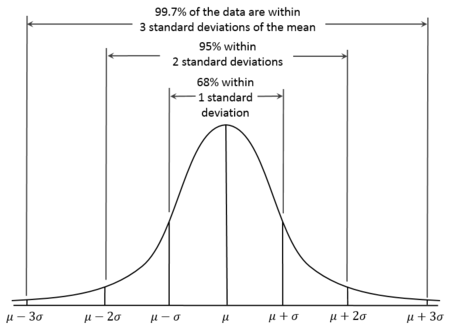

9 Week 9: Unrelated-samples t-test and Power
Written by Tom Beesley & John Towse
9.1 Pre-lab work: online tutorial
Online tutorial: You must make every attempt to complete this before the lab! To access the pre-lab tutorial click here (on campus, or VPN required)
Getting ready for the lab class
Create a folder and a Project for Week 9. Click here for the instructions from Week 6 if you are unsure.
Download the Week_9.zip file and upload it into this new folder in RStudio Server. If you need them, here are the instructions from Week 2.
9.2 RStudio Task 1: Data visualisation and cleaning
In this class we will be exploring some data on music preferences and social media use. In our survey we asked people to rate how much they liked various music artists out of 5. There were some “pop” artists like Beyonce and Taylor Swift, and some “rock” artists like Coldplay and Nirvana. In the data we have grouped the ratings for pop artists together, and similarly for the rock artists: each respondent therefore gets a pop_score and a rock_score. We’ve also turned these ratings into a categorial variable, which reflects whether someone liked pop more than rock (“pop-tastic”), or not (“rock-on” - either they preferred rock, or they had no preference).
The other variables relate to social media use. We have the instagram_followers and facebook_friends, which provide a (fairly crude) measure of how much someone engages with these social media platforms.
Let’s first take a look at the data on music preferences. We might think that people who like rock music are less likely to be in to pop music (and vice versa). To look at this relationship we can plot one score on the x axis and one on the y axis. Read in the data (make sure it’s called “data_w9”) and complete the
geom_jitter()code to do this (we usegeom_jitter()here because there are overlapping points).Consider the pattern of data you see. In general, do people who really like pop (high scores) like or dislike rock? Conversely, do those who like rock dislike pop? What pattern would you expect for these different relationships in preference? Talk about it with your table.
Next you can add a mapping between music_pref and colour to show our boundaries for the three levels of the categorical variable
Let’s take a look at the two social media variables. Complete the code for the two histogram plots to view the data on facebook friends and instagram followers.
You’ll see that for both variables, there are some extreme values (some people have >1000 friends and > 2000 followers). These outlier values can be problematic when we run our statistical tests, so (like last week) we probably want to control their influence by removing them. As you saw in your online tutorial, we can convert the data to z scores, and then remove z values above and below certain values.
Let’s create two “z-transform columns”. Complete the code by adding the two variable (column) names to the code. View the data_w9 object to check these have been created correctly. Like in the online tutorial, it would be a good idea to calculate some descriptive statistics for these new columns to check them (e.g.,
mean(),sd(),min()andmax()).We know from our lectures on the z distribution that values of greater than 2 (or less than -2) reflect around 5% of the distribution, and values greater than 3 (or less than -3) represent less than 1% of the distribution:

- Let’s consider an outlier any value that has a z of 2.5 (a conventional cutoff). Complete the filter command to remove the data where the z value is greater than 2.5 for both the z_FF column and the z_IF column. Note you only need to look at positive values: our histogram has already shown that these data are positively skewed with outliers only at the positive end (you cannot have fewer than 0 friends/followers; these are ratio scales with a true 0 value). Complete the filter command to remove the positive z values above 2.5. When completing this, note the use of the AND (&) symbol: We want to KEEP z values that are below 2.5 for both the z_FF and z_IF variables.
9.3 RStudio Task 2: Unrelated samples t-test
Let’s have a look at whether people’s music preferences relate to their social media use. To do this, let’s use our category variable music_pref. Complete the
group_by()andsummarise()commands to give the mean values of facebook_friends (meanFF) and instagram_followers (meanIF) for each level of the music_pref variable. You don’t need to edit theN = n()line - this provides the number of participants at each level of the music_pref variableWhat do the means suggest? Are those rock-grandads stuck in the last decade on Facebook? Are the pop-divas insta-addicts?
Let’s test if these differences are real. First, note that most people liked pop music more than rock music (see the N column in the summary). We have unequal sample sizes, and potentially unequal variances. Run the
var.test()code to check if the variances of the two samples are similar (homogeneity of variance). If this test produces a p value less that .05, then the variances in the two samples are unequal. That will have consequences for how we run thet-test()in the next step.Now let’s run the t-test. This week we are comparing data from different samples of participants (those who preferred pop and those who preferred rock). We need to tell the t-test that the data are NOT paired (
paired = FALSE). The result of thevar.test()in the last step will tell you whether thevar.equalvalue should beTRUEorFALSE. Setvar.equal = FALSEorvar.equal = TRUEdepending on whether the variances are equal. When you’re happy with the values, run the t-test. What result did you get and what does this mean? Discuss this with your table, or with the staff in the lab.In that t-test we looked at the facebook_friends variable, but what about the instagram_followers variable? Copy the code to run another
var.test()andt.test(), for the instagram_followers variable. Note the t and p values; What do these tell us about the relationship between music preference and social media use?
9.4 RStudio Task 3: Power and effect size (d) calculations
We saw in last week’s lab tasks that there was a significant effect in our Stroop task data: participants were faster to say the colour names of the compatible list compared to the incompatible list (there were significant differences with the control list too). We will now use these data to calculate an effect size (Cohen’s d) for the t-statistic that we observed in that test.
Import the stroop data. It’s always a good idea to
view()it (you can do this by clicking on it in the environment) to remind yourself what it looks like.Run the code that will
filter()the data to the two conditions we are interested in (compatible and incompatible).Run the
cohens_d()code to calculate the effect size, which is reported as effsize. You can ignore any negative sign, taking note of the absolute value.So we know that this large effect size was significant with our fairly large sample of participants. What might we have expected with a much smaller sample size. Use the
pwr.t.test()function to add in the effect size (d) and an N of 20. What power would we have achieved with this sample size, to detect this large effect?Let’s say we wanted our next experiment to have an 80% chance of finding an effect at least as large as the one we found. Complete the
pwr.t.test()function to work out the minimum sample size we would need to achieve power of .8, with this effect size.Let’s say we are looking to run a new experiment in which we give people a stressful task to complete simultaneously. We will ask them to put their hands in a bucket of ice cold water while doing the Stroop task. We are unsure of what consequence this will have for our effect size, but we want to estimate the effect size that could be achieved. We decide to run 40 participants, and want to achieve a power of .90 (90% chance to find an effect at least this large). What is the minimum effect size we could hope to detect under these conditions?